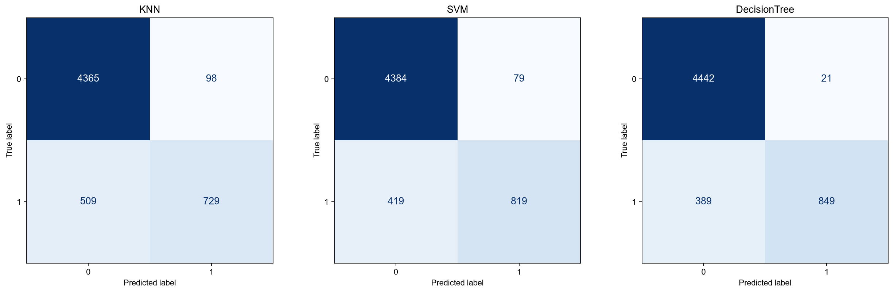
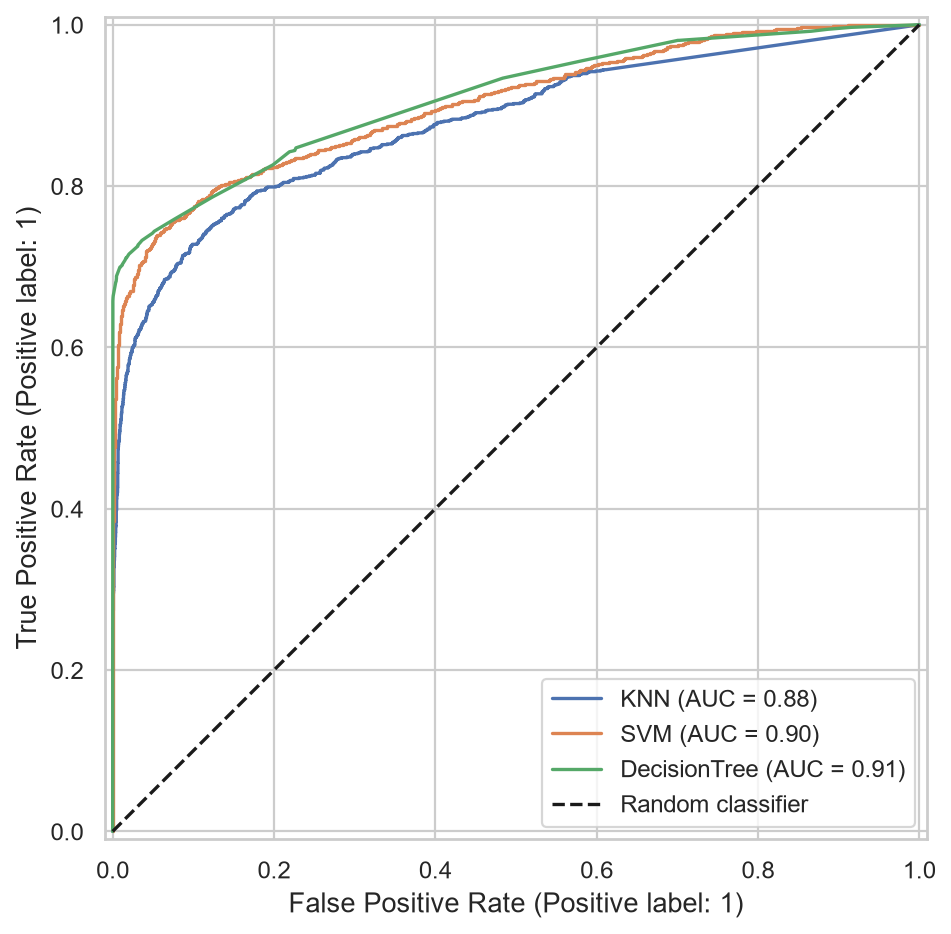
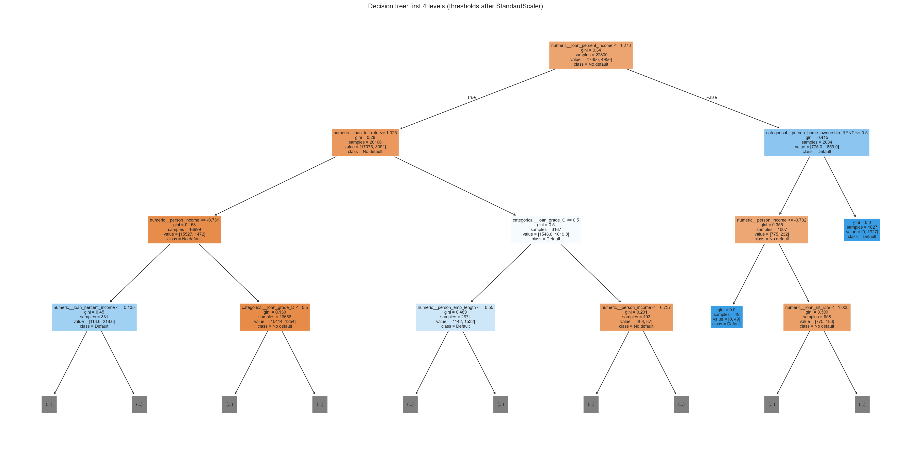
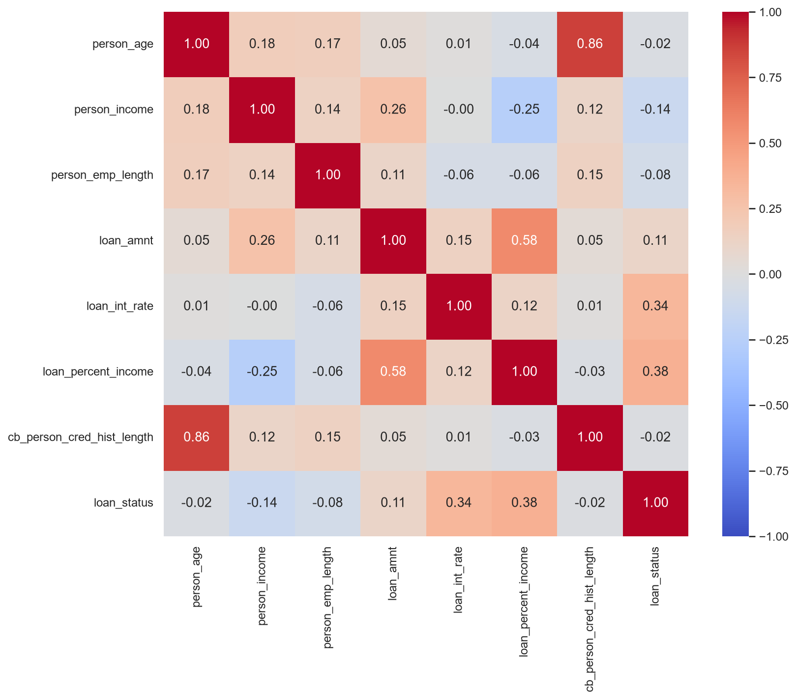
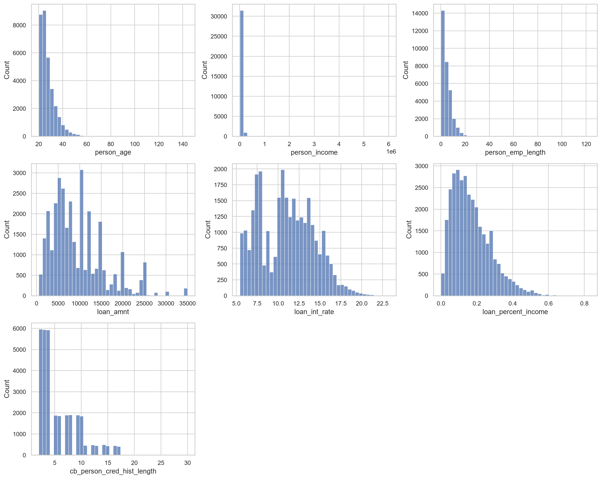
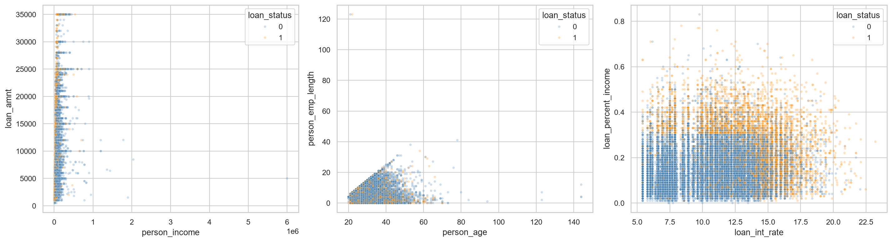
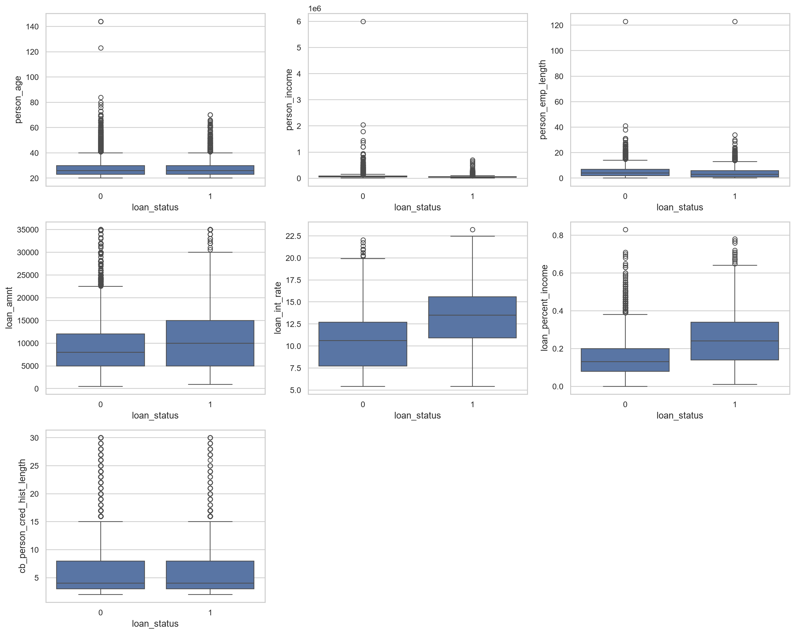
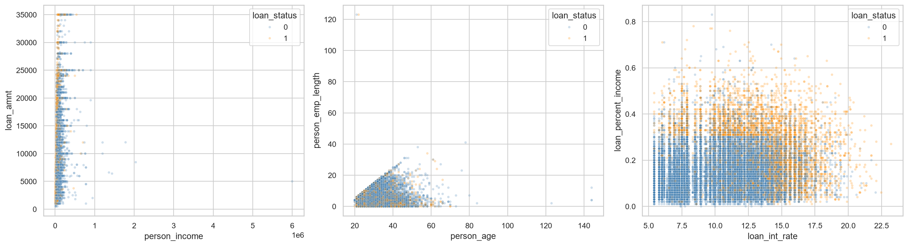

Исходных строк: 32581; удалено с пропусками: 3943; дубликатов: 137; осталось: 28501.
Обучение: 22800 строк; тест: 5701. Подбор параметров: 3 фолда CV, критерий F1 класса «дефолт».
Precision, recall и F1 относятся к классу 1 — дефолту.
| model | cv_f1 | precision | recall | f1 | roc_auc |
|---|---|---|---|---|---|
| KNN | 0.7099 | 0.8815 | 0.5889 | 0.7061 | 0.8771 |
| SVM | 0.7791 | 0.9120 | 0.6616 | 0.7669 | 0.9010 |
| DecisionTree | 0.8030 | 0.9759 | 0.6858 | 0.8055 | 0.9092 |
Выбрана по CV F1: DecisionTree.
Дерево нашло 849 из 1238 дефолтов и пропустило 389. Выбросы пока сохранены.
{
"best_parameters": {
"model__n_neighbors": 15,
"model__weights": "distance"
},
"classification_report": {
"0": {
"precision": 0.8955683217070168,
"recall": 0.9780416760026888,
"f1-score": 0.9349898254257256,
"support": 4463.0
},
"1": {
"precision": 0.8814993954050786,
"recall": 0.5888529886914378,
"f1-score": 0.7060532687651332,
"support": 1238.0
},
"accuracy": 0.8935274513243291,
"macro avg": {
"precision": 0.8885338585560477,
"recall": 0.7834473323470632,
"f1-score": 0.8205215470954295,
"support": 5701.0
},
"weighted avg": {
"precision": 0.8925131856323283,
"recall": 0.8935274513243291,
"f1-score": 0.8852751337671019,
"support": 5701.0
}
}
}{
"best_parameters": {
"model__C": 10,
"model__gamma": "scale",
"model__kernel": "rbf"
},
"classification_report": {
"0": {
"precision": 0.9127628565479908,
"recall": 0.9822989020838001,
"f1-score": 0.9462551262680768,
"support": 4463.0
},
"1": {
"precision": 0.9120267260579065,
"recall": 0.6615508885298869,
"f1-score": 0.7668539325842697,
"support": 1238.0
},
"accuracy": 0.9126469040519207,
"macro avg": {
"precision": 0.9123947913029486,
"recall": 0.8219248953068434,
"f1-score": 0.8565545294261733,
"support": 5701.0
},
"weighted avg": {
"precision": 0.9126030022159921,
"recall": 0.9126469040519207,
"f1-score": 0.9072972806654539,
"support": 5701.0
}
}
}{
"best_parameters": {
"model__class_weight": null,
"model__max_depth": 8,
"model__min_samples_leaf": 5
},
"classification_report": {
"0": {
"precision": 0.9194783688677293,
"recall": 0.995294644857719,
"f1-score": 0.9558855175381967,
"support": 4463.0
},
"1": {
"precision": 0.9758620689655172,
"recall": 0.68578352180937,
"f1-score": 0.8055028462998103,
"support": 1238.0
},
"accuracy": 0.9280827924925452,
"macro avg": {
"precision": 0.9476702189166233,
"recall": 0.8405390833335444,
"f1-score": 0.8806941819190035,
"support": 5701.0
},
"weighted avg": {
"precision": 0.9317223647844213,
"recall": 0.9280827924925452,
"f1-score": 0.9232291858432095,
"support": 5701.0
}
}
}






